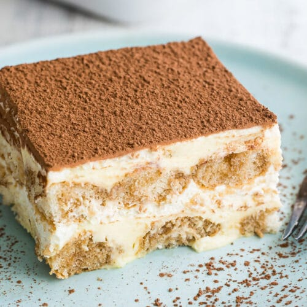

Macaroni And Cheese

Big Lou's Tarimisu, the perfect desert.
Ingredients
- Ladyfingers (Savoiardi): About 24 pieces. These are the main layers of the Tiramisu.
- Strong Coffee or Espresso: 1 cup, cooled to room temperature. This is for dipping the ladyfingers.
- Mascarpone Cheese: 8 oz (227 grams). This gives the Tiramisu its creamy texture.
- Eggs: 3 large eggs, separated. The yolks are used for the creamy mixture, and the whites are whipped to add airiness.
- Sugar: 3/4 cup, for sweetness and texture
- Cocoa Powder: For dusting on top.
- Rum or Coffee Liqueur (optional): 2 tablespoons, to mix with the coffee for an extra kick.
- Vanilla Extract: 1 teaspoon, for flavo
Directions
- Brew the coffee and allow it to cool to room temperature. Mix in the rum or coffee liqueur if you're using it.
- In a large mixing bowl, whisk together the egg yolks and sugar until thick and pale. Add the mascarpone cheese and vanilla extract and mix until smooth.
- In a separate bowl, whip the egg whites until stiff peaks form. Gently fold these into the mascarpone mixture to create a light, airy texture.
- Dip each ladyfinger into the coffee mixture, ensuring it's soaked but not soggy. Lay the dipped ladyfingers in a single layer in a serving dish.
- Spread half of the mascarpone mixture over the ladyfingers. Repeat with another layer of dipped ladyfingers and then the rest of the mascarpone mixture
- Cover and refrigerate for at least 4 hours, or overnight for best results.
- Before serving, dust the top generously with cocoa powder.vv
Home